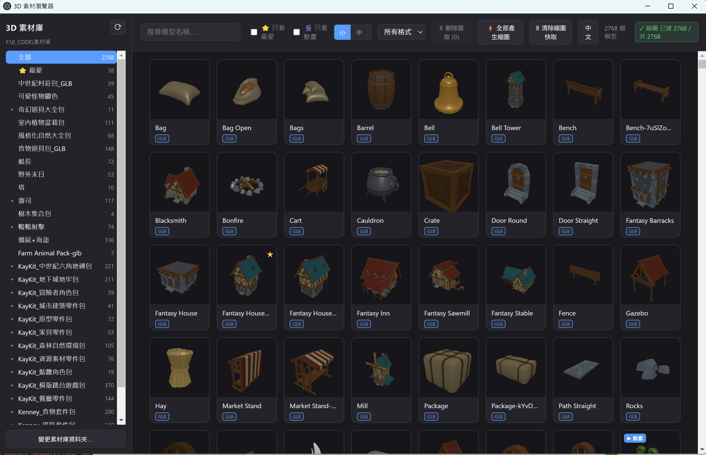
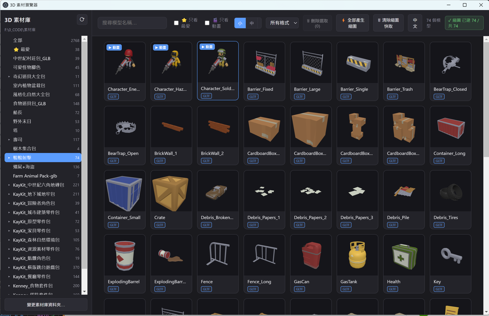

介紹影片Demo video
看看實際操作的樣子。See it in action.

▶
掃描本機資料夾、自動產生縮圖、點卡片即可在 3D 中旋轉檢視。同名多格式自動合併，快取存在模型旁邊，搬移素材庫不失效。 Scan a local folder, auto-generate thumbnails, click any card to rotate it in 3D. Same-name multi-format models are merged into one card. Thumbnails are cached right next to your models — they survive when you move your library.
從掃描到 3D 預覽，一站搞定。From scan to 3D preview — everything in one place.
用 fs.promises + Promise.all 並行遞迴掃描，同名多格式（glb / gltf / fbx / obj / blend）自動合併成一張卡片。Parallel recursive scan via fs.promises + Promise.all. Same-name multi-format models (glb / gltf / fbx / obj / blend) are merged into a single card.
用 three.js 離屏渲染縮圖，快取存在 {模型目錄}/.thumbs/，搬移素材庫不失效。IntersectionObserver 懶載入，畫面外不渲染。three.js offscreen rendering saves thumbnails to {model_dir}/.thumbs/ — portable with your library. IntersectionObserver lazy-loads cards only when visible.
點卡片即可旋轉、縮放、平移；支援線框、格線、深色 / 淺色 / 透明背景切換；顯示面數與頂點數。Click any card to rotate, zoom and pan. Wireframe, grid, dark/light/transparent background toggle. Shows triangle and vertex counts.
GLTF / GLB / FBX 內含的動畫片段可播放、暫停、切換，預設自動播放 Idle 動畫。Play, pause and switch animation clips from GLTF / GLB / FBX. Automatically defaults to the Idle clip when available.
Ctrl+點 多選、Shift+點 範圍選取；右鍵列出所有路徑、批次複製、批次刪除（移到資源回收桶）。Ctrl+click to multi-select, Shift+click for range. Right-click to list all paths, copy in bulk, or batch-delete (moves to Recycle Bin).
關鍵字搜尋、格式篩選（glb / gltf / fbx / obj / blend）、只看最愛、只看動畫模型。側欄資料夾樹快速切換目錄。Keyword search, format filter (glb / gltf / fbx / obj / blend), favorites-only, animated-only. Sidebar folder tree for quick directory switching.
⭐ 標記最愛模型，側欄「最愛」分類快速存取；資料存在 userData，不動原始素材。⭐ Star your favorite models and access them in the sidebar Favorites folder. Data is stored in userData and never touches your asset files.
右上角一鍵切換 English / 中文，設定存在 localStorage 跨次重啟記住。One-click toggle between English and 中文 in the top bar. The choice is remembered across restarts via localStorage.
Windows portable exe 免安裝即可執行；所有平台皆提供安裝版，由 GitHub Actions 自動從公開原始碼建置。Windows portable exe runs without installing. All platforms have an installer. Every binary is built by GitHub Actions from public source.
看看實際操作的樣子。See it in action.
瀏覽、多選、一站搞定。Browse, select, done.
掃描完成後，所有模型以縮圖卡片呈現。縮圖由 three.js 離屏渲染並快取在模型旁，下次開啟秒速顯示。左側資料夾樹可快速切換目錄。After scanning, every model is displayed as a thumbnail card. Thumbnails are rendered by three.js offscreen and cached right next to your models — instant on the next launch. Use the sidebar folder tree to navigate quickly.

Ctrl+點 多選、Shift+點 範圍選取；右鍵呼出選單，可列出所有路徑、複製、或批次刪除至資源回收桶。Ctrl+click for multi-select, Shift+click for range. Right-click to list all paths, copy in bulk, or send a batch to the Recycle Bin.

到 Releases 頁面取得最新版本，所有平台皆有對應檔案。Grab the latest build from Releases — binaries for every platform.
| 平台Platform | 檔案File |
|---|---|
| Windows（安裝版 · 推薦）Windows (installer · recommended) | *Setup.exe |
| Windows（免安裝可攜版）Windows (portable) | *portable.exe |
| macOS (Apple Silicon) | *arm64.dmg |
| macOS (Intel) | *x64.dmg |
| Linux | *.AppImage · *.deb |
從 Releases 取得對應平台的安裝檔或可攜版，雙擊即可啟動。Grab the installer or portable exe from Releases and double-click to launch.
按左下角「變更素材庫資料夾…」選取你的 3D 素材根目錄，App 會自動遞迴掃描。Click "Change library folder…" at the bottom-left and select your 3D asset root. The app will scan it recursively and automatically.
點卡片進 3D 檢視器；按 ⚡ 全部產生縮圖；Ctrl+點 多選後右鍵可列出路徑或批次刪除。Click a card to open the 3D viewer. Press ⚡ to batch-build all thumbnails. Ctrl+click to multi-select, then right-click to list paths or delete in bulk.